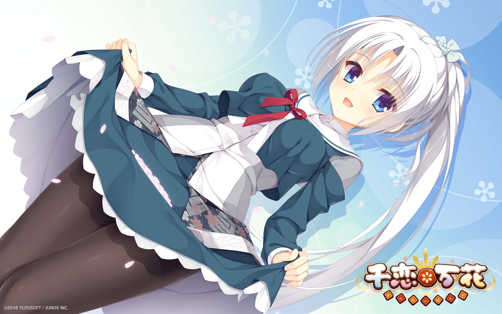
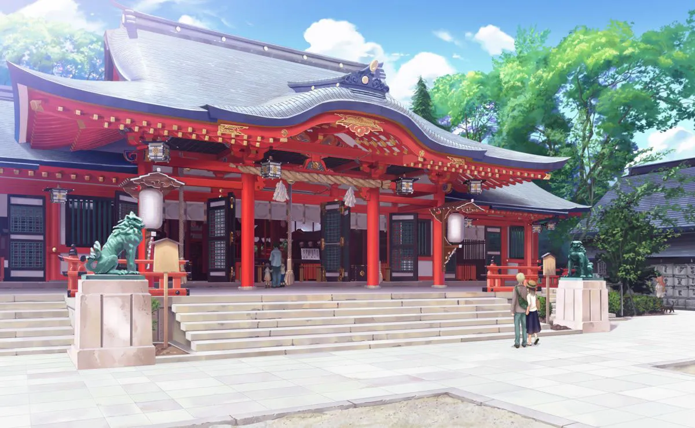
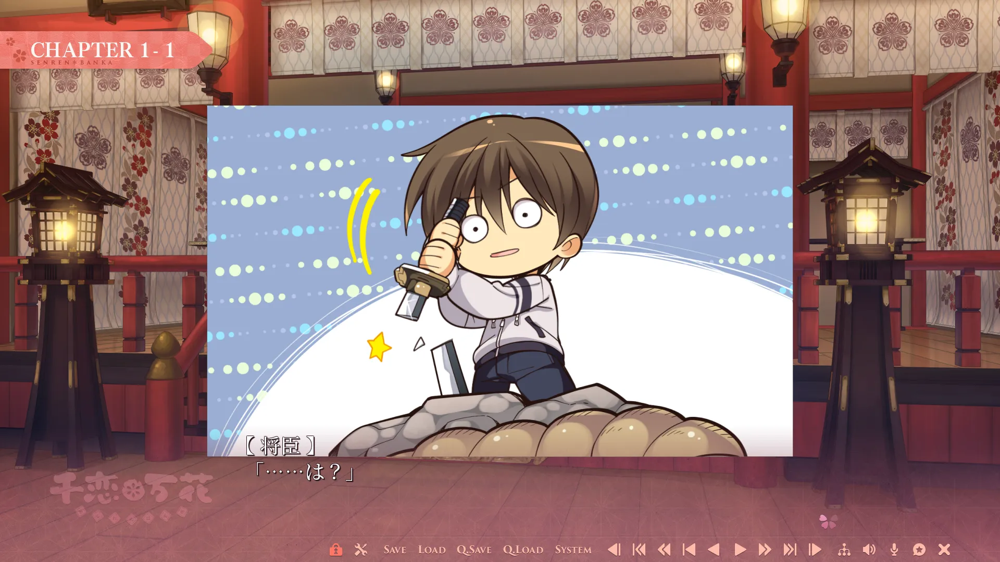
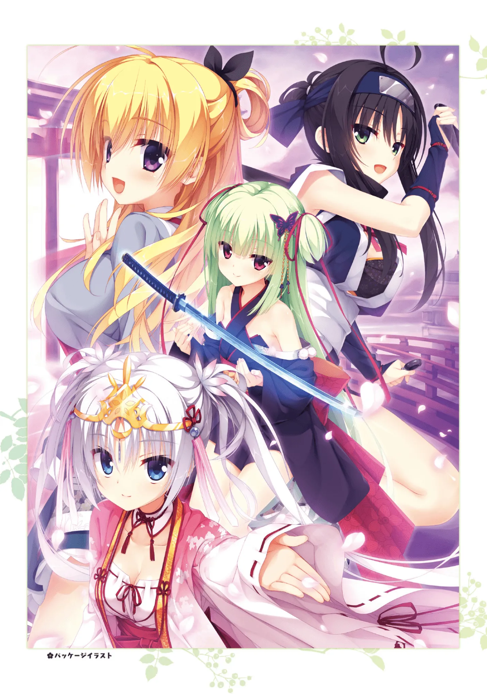
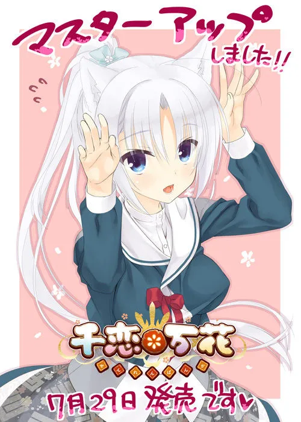
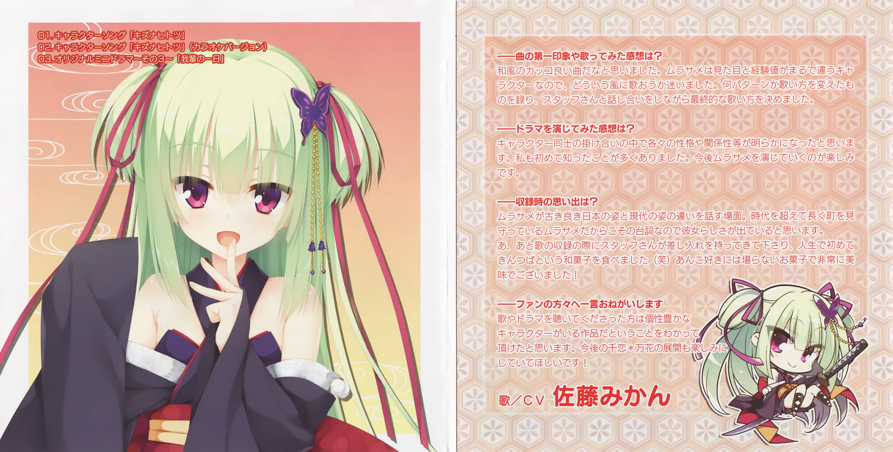

千恋＊万花：誘騙和風少女
作者：和風少女桐遠暮羽
At A Glance
高中生少年 有地將臣 把老家神社裏的遠古文物寶刀給弄斷了，於是他被判處肉償。


| 資訊一覽 | |
|---|---|
| 開發商 | 柚子社 |
| 遊戲時長 | 35h |
| 攻略人數 | 6 |
| 類型 | 奇幻，搞笑，和風 |
| 難度 | 中（選項挺多但是有路線圖） |
| 分級 | R-18（性行爲） |
| 遊戲引擎 | KIRIKIRI Z |
校服，包得比粽子還厚，，，
故事
高中生 有地將臣 有一天接到了老媽的神必來電，
將臣，你快點去你外公的旅館幫忙，
旅遊旺季要來了！
蛤？平時不都是你去嗎？
你快去，不用給我帶禮物了。
我和你爹買了機票要去歐洲度假了掰
被老媽狠坑一頓的將臣，忿忿不平地回到了闊別多年的老家鄉間小鎮，穗織。
穗織 是個一天連公交車都沒幾趟的邊遠小鎮，
但是其獨特的和風建築、和風文化甚至是和風溫泉…吸引了許多外國人來旅遊，
所以街上都是外國人。
尋找着外公的去向，將臣來到了鎮上的神社⛩️
那裏正在舉行名爲 春日祭 的盛大慶典，
神社裏面正在舉行「誰能拔出這把刀？」的挑戰活動，
許多遊客都是衝着這兩個活動慕名而來，爲穗織貢獻了不少 GDP，，，
和外公見面後，將臣受到了外公的邀請，也試着去參加那個從岩石中拔出寶刀的活動。
因爲傳說那把刀具有神力，反正都是拔不出來，將臣決定稍微演一下就完事。

將臣簡單演了一下，神刀沒繃住，裂了
然後聞訊而來的男主外公，決定把男主賣給神社，用身體償還牠破壞文物的罪行，，，
登場人物
神社裏唯一的巫女，每天下午都要登臺跳舞，
是全村人的偶像。
不明所以的外國人則認爲她是個每天都要表演的敬業 Coser，
名聲越傳越廣的芳乃就成爲了超人氣 Cosplay 偶像。
爲人嚴肅，所以當她聽說可以在神社裏
對男主的身體爲所欲爲的時候，
臉上直接出現了 你不要過來啊！！ 的驚慌神色。
茉子屬於忍者家族，由於一些歷史淵源，
她從小到大都一直護佑在巫女身邊，
由於家族地位的關係，雖然兩人關係很好，
她還是沒辦法和巫女平等地做朋友。
表面上活潑開朗平易近人，
實際上暗地裏看了很多（色情的）少女漫畫，
明明是處女，卻擁有六人之間最豐富的性經驗。
自稱是神刀的管理員，
已經在小鎮上存活了 500 多年，
是神一般的存在，但是男主把妹的時候毫不含糊。
自從男主拔出了神刀，
她就順理成章地把男主認作自己的主人，
要永遠效忠於他（誘騙成功）
她沒有真正的身體，就如同幽靈一般，
所以不是每個人都能看見她，
會飛。
其他人物
レナ：從歐洲遠道而來的留學生
小春：表妹
芦花：青梅竹馬的大姐姐
男主角：你
遊戲 OP
動畫來自被牆的 Steam。
Galgame 金曲: 🔗️恋ひ恋ふ縁
我會告訴你在聽說過千戀萬花之前，我就已經聽過這首歌了嗎？
遊戲 CG
遊戲畫面
一句話點評
第一次打開這個遊戲的時候，我是歡呼雀躍的，
因爲這個遊戲充滿和風的氛圍、人物設定
和 BGM 都太對我口味了。
之前介紹過的四目之神雖然也和風，
但是那個劇情太沉重了，所以歡樂的千戀萬花給我留下了非常好的第一印象。
又見柚子社，小心柚子廚，不過我才不是柚子廚，我只玩過兩部柚子的遊戲，
一部是星光咖啡館，一部就是千戀萬花。
比較一下千戀萬花和咖啡館兩部作品，咖啡館每天打工打爆，才是真白開水，
還是千戀萬花的故事比較有趣，算是加了糖的日本抹茶。
千戀萬花的故事節奏舒服，
每一個章節都不拖沓，都有及時給玩家新的刺激來保持興趣。
與此相對，之前玩的另一個 Galgame，
開局大量專有名詞直接突臉，連講三十分鐘，
把我人都沖傻了，，，
輕鬆的氛圍，美麗的作畫，令人憐愛的角色，是我喜歡千戀萬花的理由。
（別誤會，我依然不是柚子廚）
還在猶豫是否下載？
有一個試玩錄像，很短，請欣賞裏面的和風 BGM！
BGM 曲名叫做：今昔の街
攻略順序
按照這裏的順序獲得最好的遊戲體驗。
實現小叢雨五百年來的心願吧！
資源和下載
Steam 版（可切換多種語言）
Steam 商店版需要額外安裝 R-18 補丁。
網友發的資源： 🔗️前往 Telegram 頻道
（已安裝 R-18 補丁）
備註：Hikari Field 警告
原版光盤鏡像（日文）
遊戲本體：
1 | |
文件名： (18禁ゲーム) [160729] [ゆずソフト] 千恋＊万花 + Update 1.10 + Character Song CDs + Mini Drama CD + Drama CD + Scans
這個種子還包含了一些音樂和小故事的錄音。
或者：
1 | |
文件名：千恋＊万花 + 修正パッチ
安裝遊戲後，請在 🔗️柚子社官網 下載升級補丁。
漢化：別漢化了，請直接玩日文，中文版直接找 Hikari Field，，，
花絮
柚子社太出圈了，不僅是 Galgame 玩家，就連一般通過路人都知道柚子社，
所以千戀萬花知名度也高到離譜，看看 Steam 上的盛況就知道了，，，
接下來我要放一些在收集本文素材的時候偶遇的文件👀️
Analog 作畫
和風就是要有曼珠沙華，沒有彼岸花就不叫和風，，，（圖 3）
掛畫


快看芳乃的貓耳，遊戲裏就沒出現過幾次，柚子社就是喜歡放着重要的設定不用。
Galgame 聯動
太搞了，我就沒見過幾次 Galgame 聯動，但是千戀萬花已經是聯動麻了屬於是。
角色歌光盤
連聲優訪談都附在裏面

還有
角色歌我有傳到 🔗️Galgame 金曲（在新頁面打開）
然後光盤後面還附有一些遊戲裏面沒有的小故事，
比如說神社的各位在討論要去哪裏賞花或者泡溫泉之類的。
那些光盤在上面的 BT 種子裏面有。
系統提示音，推特頭像，千戀萬花時鐘 APP…
啥都有我就不發這裏了，群裏有群友發過，，，
二次創作
多如牛毛！上 e-hentai 簡單查查就能找到，有漫畫有小說啥都有
聊天室貼紙
阿這其實是官方放 Line 上面賣的，但是 Telegram 的也有，都被群友用爆了
迫害小叢雨
你看那個綠色頭髮的，有沒有覺得眼熟？
沒錯，就是那個…就是那個曾經在 YouTube 上做直播的，，，
開始進行 AI 識圖。。。
頭髮顏色：綠色
眼睛顏色：紅色
胸部：未發現
髮飾：蝴蝶
識別成功！準確率 89.64%
結果：
結果是什麼❓️❓️❓️
這就導致我一個不玩 Galgame 的二次元朋友，一提到千戀萬花，就是那個
粽子精…
熱愛小叢雨❤️
別煉啦別煉辣！人家已經 500 歲辣！！
甚麼你說你更興奮了？沒救啦！！！
突開ムラサメ角色歌的網易雲音樂評論區，一下子噴出 5,000 多條評論，
嚇得我閉上眼睛趕緊退出😅
对于原创内容，文章作者保留所有权利。转载需要许可，如有需要请前往 🔗️Galgame 频道 留言。
另外，复制链接自由，请随意分享。